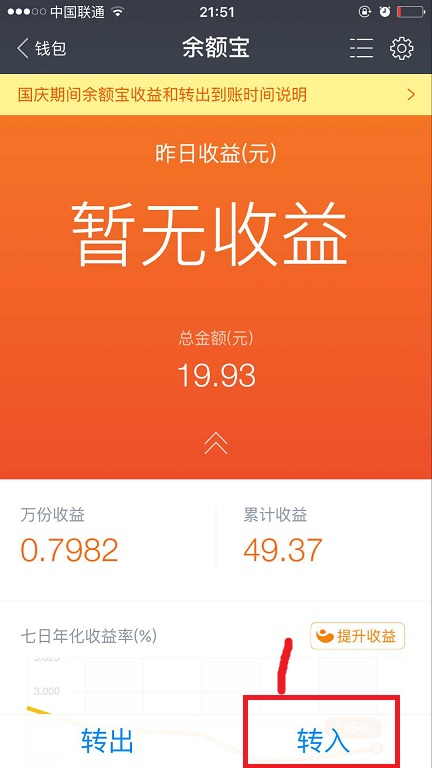

A设置消息提醒
1.点击头像进入设置页面

2.点击设置按钮
3.在朋友消息设置里面，如果接收新消息通知为 已开启，就表示可以了。如果为关闭，那就需要根据提示到手机系统设置去设置
4.打开系统设置，点击通知
5.找到支付宝，点击进去
6.把所有开关都打开，然后返回，打开支付宝，就可以收到交易通知，和聊天信息等等等了
B余额宝转出到银行卡
1.打开余额宝
（点击1到达主页，然后点击2打开余额宝）
2。在余额宝首页可以看到余额宝里面的金额
（点击1转出 可以把余额宝的钱转到余额或者银行卡
点击2转入，可以把余额或者银行卡的钱转入余额宝
点击3设置，可以设置转账通知之类的设置）
3.转出操作
（点击1转出到银行卡，表示进行将余额宝的钱转到银行卡
点击2转出到余额，表死后把余额宝的钱转到余额
如果选择了转出到银行卡，点击3选择需要转出到的银行卡号，这里的银行卡 号只能是自己的，需要绑定，
4输入金额，
5确定就可以转出了）
C余额转出到银行卡
1.财富的相关操作
（点击1，进入财富页面
点击2余额。进入余额页面）
2.在余额页面操作转出到银行卡
（这里转出到银行卡只可以转出到自己的银行卡，
如果需要转出到余额宝，就到余额宝的首页然后选择转入，
如果需要转到别人的银行卡，就在首页的余额宝按钮旁边的转账进行转账）
D转入到余额宝
1.选择转入

2.进入转入操作页，点击账户余额可以选择余额转入或者银行卡转入
3.选择转入方式
（3的位置是余额，4的位置是银行卡）
E查看交易记录
（点击2就可以查看所有的交易记录了）